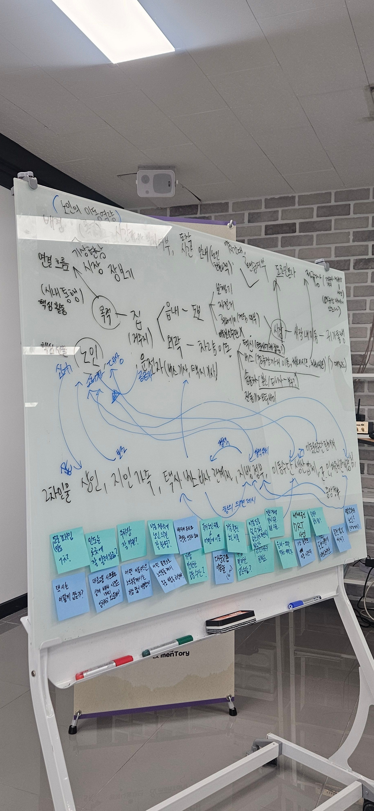
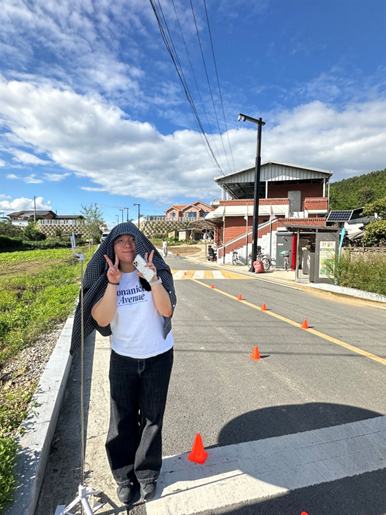
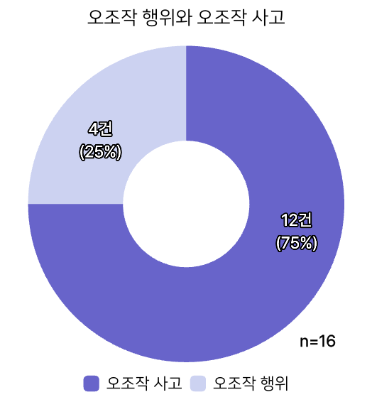
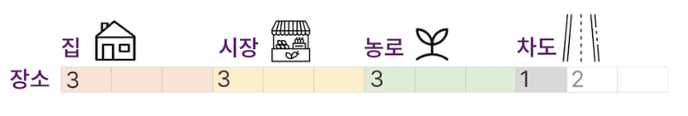
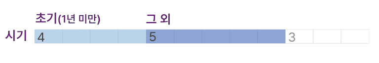
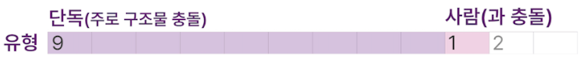
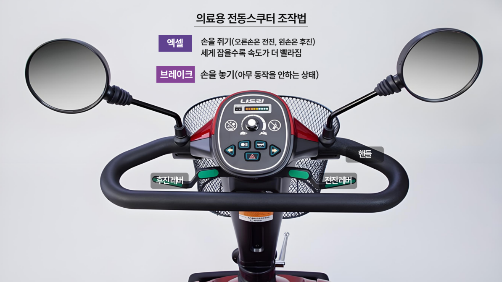

01 첫 번째 브레인스토밍. 의성의 이동권 문제에 대해 아는 것은 거의 없었다.

2025년 6월 26일 4명의 대학생이 의성에 도착했다. 지역 소멸 문제 해결, 소셜 분야 진로 탐색, 시골 삶 경험 등 각기 다른 목표와 관심사를 갖고 있었다. 하지만 '써니'로서 4명이 가지고 있는 공동의 목표가 있었는데, 의성 어르신들의 '진짜' 이동권 문제를 찾아내는 것이었다. 진짜 이동권 문제란 인터넷에 검색하면 나오는 뻔하고 추상적인 문제가 아니라 확실하게 해결할 수 있는 작고 구체적인 문제였다. 그래서 문제 탐색에 앞서, 의성 어르신들의 이동 장벽을 제거(Remove)하고, 이동 제약으로 어려움을 겪고 있는 어르신들을 다시 움직(Re-move)이실 수 있게 만들겠다는 야심 찬 뜻을 담아 'RE:MOVE(리무브)'라는 팀 이름을 만들었다.

01 첫 번째 브레인스토밍. 의성의 이동권 문제에 대해 아는 것은 거의 없었다.
하지만 평생 도시에서 살아온 우리에게 '의성의 진짜 이동권 문제 찾기'는 맨땅에 헤딩하기나 다름없었다. '의성', '어르신', '이동권' 중 무엇 하나 확실히 알지 못했기 때문이다. 그래서 우리는 무작정 밖으로 나갔다. 어르신의 주 활동 시간대인 오전에 보건소, 우체국, 마트, 시장, 병원, 복지관 등 어르신이 계실 것 같은 곳이라면 가리지 않고 돌아다녔다. 현장 속에서 보고 들을 수 있는 어르신의 대화, 생활 모습, 의성만의 문화 모두 중요한 학습 자료가 되었다. 3주쯤 지나니 어르신과 대화를 나누는 것이 익숙해졌고, 낯설던 사투리에 귀가 트였다. 무엇보다, 누가 봐도 이방인 같던 도시 청년의 모습이 온데간데없어졌다.


그러나 여전히 의성의 어르신 이동권 문제가 무엇인진 알기 어려웠다. 처음 관심을 가졌던 행복버스, 행복택시나 이재민의 재난 후 이동권 같은 분야에선 우리가 예상했던 문제를 찾기 어려웠다. 시간은 빠르게 흐르는데 길이 보이지 않았다. 침체기에 빠져있던 어느 날 의료용 전동스쿠터와 도로변 주차 문제에 관심 있던 한 팀원이 '의료용 전동스쿠터는 차체가 높지 않은 편인데, 도로변 주차로 운전자가 의료용 전동스쿠터를 보지 못해 위험할 수 있지 않을까?'라는 의문을 제기했다. 우리는 이 의문에 공감하며 의료용 전동스쿠터에 대한 심층 리서치를 시작했다.
우리가 의료용 전동스쿠터의 존재를 처음 인식한 것은 7월 2일 의성노인복지관에 방문한 날이었다. 시골에서 의료용 전동스쿠터를 많이 이용한다는 것을 알고 있었지만 복지관 앞에 마치 승용차처럼 줄지어 주차되어 있는 모습은 놀라웠다. 의료용 전동스쿠터가 의성에서 꽤 인기 있는 이동 수단임을 느낄 수 있었다. 이후에도 마을회관, 오일장, 읍내 인도와 차도 등에서 시도 때도 없이 의료용 전동스쿠터를 쉽게 목격할 수 있었다.

02 의성노인복지관 앞. 의료용 전동스쿠터가 마치 승용차처럼 줄지어 주차되어 있다.
"예, 타는 게 좋아요. 그 얼마나 편리한지 몰라요."의성 어르신들의 전동스쿠터에 대한 목소리
"딸보다도 낫고 아들보다도 낫고"
"그거 뭐 제일 쉬운 게 뭐 전동차인데, 뭐. 자전거는 못 타도 그거는 뭐 대번 되더라고."
흥미로운 것은 의료용 전동스쿠터를 이용하시는 어르신들께서 이렇게 말씀하시는 것과 달리 의료용 전동스쿠터의 안전성에 대해 부정적으로 보도하는 기사들이 많았다. 그래서 우리는 승용차 운전자의 객관적인 시각을 알아보기 위해, 도동3리 노인회장이자 장애인협회에서 활동하셨던 서상우 어르신을 심층 인터뷰했다. 인터뷰를 통해 중요한 정보를 알게 되었는데, 도로변 주차뿐만 아니라 인도 적재물, 교육 부재, 중고 전동차 구매 등 의료용 전동스쿠터 이용자의 안전을 위협하는 문제가 아주 많다는 것이었다.


우리는 의료용 전동스쿠터의 안전성을 둘러싼 수많은 문제 중 무엇이 진짜 문제인지 찾아야 했다. 그 첫 번째 단계는 폭넓은 이해관계자 리스트업이었다. 의료용 전동스쿠터에 대한 전문적인 의견을 들을 수 있는 의료기기점과 제조업체, 안전 문제와 교통 문제를 책임지는 경찰서, 파출소, 119, 그리고 차도에서 의료용 전동스쿠터를 많이 목격했을 버스와 택시 기사님들, 사고가 나면 빠르게 현장에 도착하는 구난차 업체를 리스트업했다.

03 안동의 의료기기점. 의성에는 큰 규모의 의료기기점이 거의 없어 안동까지 찾아갔다.
가장 먼저 찾아 나선 이해관계자는 안동 의료기기점 사장님들이었다. 의성엔 큰 규모의 의료기기점이 거의 없었고, 안동에서 의료용 전동스쿠터를 구매하시는 어르신이 많았기 때문에 안동 의료기기점을 선택했다. 처음 방문한 '메디카'에서 우리는 새로운 이야기를 듣게 되었다. 어르신들께 의료용 전동스쿠터 이용법을 교육할 때 특히 신경 쓰시는 부분이 있냐고 여쭤보자 다음과 같이 답하셨다.
"레버를 잡으면 앞으로 가고, 놓으면 멈추는 방식인데 당황하거나 놀라시면 손을 안 놓으셔서 사고 나는 경우가 많아요. 그래서 멈추려면 손을 꼭 놓으셔야 한다고 말씀드리죠."안동 의료기기점 '메디카' 사장님
데스크리서치와 이전까지의 인터뷰에서 전혀 찾을 수 없던 문제였기 때문에 안동의 다른 4곳의 의료기기점에서 해당 문제가 발생하는지 여쭤보았다. 놀랍게도 처음 방문한 메디카를 포함해 5곳 중 4곳에서 같은 응답을 들을 수 있었다. 이것이 '진짜' 문제의 실마리라고 생각한 우리는 이 문제를 '의료용 전동스쿠터 오조작'이라고 정의 내리고 현장에서 오조작 문제가 얼마나 많이, 얼마나 심각하게 발생하는지 확인하기로 했다.
우선 리스트업 해두었던 경찰서, 파출소, 119, 버스 기사님, 택시 기사님, 구난차 사장님을 인터뷰했지만 의료용 전동스쿠터에 대한 부정적 인식만 확인할 수 있었을 뿐, 오조작 문제에 관한 이야기는 전혀 들을 수 없었다. 아무도 오조작 문제를 알지 못했다. 오조작 문제가 우리가 찾는 문제가 맞을지 불안해지기 시작했지만 답은 현장에 있다는 믿음으로 당사자 인터뷰를 시작했다.
2주간 10명가량을 인터뷰했을 땐 아직 문제가 모호해보였다. 다음 3가지 이유로 인터뷰에 어려움을 겪었기 때문이다. 먼저, 어르신과 우리의 사고에 대한 관점이 달랐다. 우리는 가벼운 충돌이나 낙상도 사고라고 생각한 반면, 어르신은 크게 다친 경우만 사고라고 생각하셨다. 또, 읍내에서 무작정 돌아다니는 방식으로는 의료용 전동스쿠터를 많이 만날 수 없었다. 대부분의 어르신이 의료용 전동스쿠터를 가장 빠른 속도로 타고 다니셨기 때문에 자전거를 타고 쫓아가야만 간신히 대화를 나눌 수 있었다. 마지막으로, 어르신의 사투리를 알아듣기가 쉽지 않았다. 간단한 일상 대화를 나눌 땐 문제없었지만 구체적인 사고 정황을 파악할 땐 내용을 이해하기 어려웠다.

04 어르신과 함께한 식사 자리. 인터뷰는 공식적인 자리보다 이런 일상의 순간에서 더 진솔한 이야기가 나왔다.
그래서 그다음 2주 간은 새로운 방식으로 인터뷰를 진행했다. "사고 나신 적 있으세요?" 대신 "어디 부딪친 적 있으세요? 위험하다고 느낀 적 있으세요? 나도 모르게 레버를 꽉 잡은 적 있으세요?"로 질문의 방식을 바꿨다. 그러자 이전엔 사고 난 적 없다며 손사래를 치던 어르신들께서 생생한 사고 이야기를 전해주기 시작하셨다. 또, 무작정 읍내를 돌아다니며 의료용 전동스쿠터를 쫓는 대신 마을회관, 노인복지관 등 어르신들이 많이 계신 곳에 방문해 의료용 전동스쿠터를 이용하는 어르신을 찾았다. 의료용 전동스쿠터 이용률이 더 높을 것으로 예상되는 면 지역에도 두 명씩 지역을 나누어 인터뷰를 나가기 시작했다. 이때, 사투리에 능한 대구 출신 팀원이 나머지 팀원과 돌아가며 짝을 맺어 의사소통이 어려울 때 도움을 주고, 팀원들이 모르는 단어를 알려주었다.
각고의 노력 끝에 의료용 전동스쿠터 이용자 49명의 소중한 데이터를 얻을 수 있었다. 현장에서 어르신들의 목소리를 생생하게 담아내는 것은 정말 쉽지 않았다. 의성의 뜨거운 여름 날씨로 한 걸음 한 걸음 내딛기가 어려웠고, 우리를 의료용 전동스쿠터 판매원으로 오해하시는 일도 적지 않게 있었다. 또, 손주처럼 다정히 대해주시는 분이 대부분이었지만 낯선 이에 대한 경계 어린 시선도 종종 마주쳐야 했다. 그럼에도 우리가 어르신 인터뷰를 포기할 수 없었던 이유는 당사자만이 알려줄 수 있는 것이 있었기 때문이다.
의료용 전동스쿠터가 어르신들에게 어떤 의미인지, 타고 어디에 가시는지, 불편한 점이 있는지, 이용 중 어쩌다 사고가 나셨는지, 사고가 나셨는데도 계속 타시는 이유가 무엇인지는 어르신들만이 알려주실 수 있었다. 문제를 수치로 정의 내리고 제멋대로 판단하지 않기 위해서 우리는 당사자의 목소리를 충분히 들어야 했다. 이런 마음으로 모은 49명의 데이터는 단순한 숫자가 아니라 어르신들의 이동과 삶을 말하는 목소리였다.
우리 팀은 3주 동안 의성의 마을을 하나하나 찾아다니며 의료용 전동스쿠터와 얽힌 어르신들의 생생한 이야기를 직접 듣기 위한 기록을 이어나갔다.

05 인터뷰 조사 지역 지도. 의성읍을 중심으로 6개 면 지역까지 직접 찾아다녔다.
1️⃣ 성별 및 거주지 분포 현황
먼저 49명의 어르신의 성별 분포를 살펴보면, 49명 중 여성이 40명으로 81.6%의 압도적인 비율을 차지하고, 남성은 9명으로 18.4%를 차지했다. 이러한 성별 분포를 보았을 때, 의료용 전동스쿠터가 여성 노년층의 생활 편의를 위한 이동 수단임을 알 수 있다.
특히, 어르신들의 거주지 분포를 보면 의성 면 지역 거주자가 30명으로, 전체의 61.2%를 차지해 의성읍 지역(38.8%)보다 훨씬 많았다. 이는 경상북도 의성군의 지리적 특성을 고려할 때 중요한 의미를 가진다. 의성군은 면적이 넓고 마을이 흩어져 있어, 병원, 시장, 관공서 등의 주요 편의시설이 밀집되어 있지 않다. 더군다나 도시와 다르게 대중교통이 원활하지 않아 특별한 이동 수단 없이는 이동이 힘들다. 이러한 환경에서 의료용 전동스쿠터는 '있으면 좋은' 보조 이동 수단이 아니다.
이는 어르신들이 병원을 가고, 장을 보기 위해 반드시 사용해야 하는 '필수적인 발'이다. 걸어서는 도저히 감당할 수 없는 거리를 이동하고, 원하는 시간대에 원하는 곳으로 이동하게 해주는 이동 수단이다. 이렇듯 의성군의 지역적 특성상 어르신들이 일상생활을 영위하기 위해 의료용 전동스쿠터는 선택이 아닌 필수다.
2️⃣ 기존 면허 유무 및 기존 이동수단 여부
다음으로, 어르신들의 의료용 전동스쿠터 이전 이동 수단에 주목했다. 의료용 전동스쿠터를 타기 전에 다른 이동 수단을 이용한 경험이 있는지, 그리고 그 경험이 현재의 전동스쿠터 조작 방식이나 이용에 어떤 영향을 미치는지 파악하고자 했다.
전체 49명 중 77.6%에 달하는 38명이 자동차, 오토바이 등과 같은 운전면허가 없는 것으로 나타났다. 법적으로 의료용 전동스쿠터는 보행자의 발로서 역할을 하기 때문에 '차량'이 아닌 '보행자'로 분류된다. 이에 의료용 전동스쿠터를 탈 때 별다른 면허를 필요로 하지 않는다. 그렇기에 면허가 없는 어르신들에게 의료용 전동스쿠터는 생애 첫 번째 이동 수단일 가능성이 높다. 자가용을 포함하여 오토바이나 자전거조차 운전해 본 경험이 없는 분들도 계셨다. 우리가 인터뷰한 49명의 어르신 중 약 34%의 어르신들께서는 이전에 이동 수단 경험 없이 의료용 전동스쿠터를 첫 이동 수단으로 이용하고 있었다.
3️⃣ 전동스쿠터 경력
이어서 의료용 전동스쿠터 운전 경력을 분석한 결과, 48명 중(응답자 49명 중 48명 응답) 1년 미만의 초기 이용자는 2명(4.2%)으로 비교적 적었다. 반면에 가장 높은 비중을 차지한 집단은 1년~5년 미만(17명, 35.4%)였으며 5년~10년 미만(16명, 33.3%), 10년 이상(13명, 27.1%)의 장기 이용자도 상당수를 차지했다. 이는 의료용 전동스쿠터가 한두 번의 필요를 위해 일시적으로 사용되는 것이 아니라 수년 이상 함께하는 장기적인 이동 수단임을 나타낸다. 이처럼 높은 장기 이용률은 의료용 전동스쿠터가 어르신들의 삶에 필수적인 요소로 깊숙이 자리 잡았다는 것을 의미하기도 한다.
1️⃣ 의료용 전동스쿠터 사고 중 오조작 사고 비중
49명의 어르신 중 의료용 전동스쿠터 사고 경험이 있다고 말씀해 주신 전체 22건의 사례 중에서 절반이 넘는 12건이 의료용 전동스쿠터 오조작 사고였다. 이 수치를 보며 의료기기 판매점 사장님의 말씀으로 시작됐던 문제가 더욱 선명해지기 시작했다. 12건이라는 큰 수치는 현장에서 지적했던 "의료용 전동스쿠터 오조작"이라는 문제가 몇몇의 특이한 사례가 아님을 여실히 보여준다. 우리 팀이 본격적인 인터뷰를 하기 전 예상했던 것보다 훨씬 빈번하게 발생하고 있었으며, 이미 꽤 많은 수의 어르신들이 이미 겪고 계셨던, 분명히 존재하는 문제임을 알 수 있었다.

2️⃣ 오조작 행위와 실제 사고의 연결성
또한, 인터뷰 데이터를 쌓으면서 '오조작 행위'와 '오조작 사고'의 관계를 정의할 수 있었다. 오조작 행위란 멈춰야 하는 상황에서 엑셀을 꽉 쥐는 것이다. 오조작 사고란 오조작 행위로 인해 발생하는 사고를 말한다.
인터뷰 결과, 의료용 전동스쿠터를 타면서 오조작 행위를 경험하셨던 것은 총 16건이었다. 그중 12건이 오조작 사고로 연결되었다. 모든 오조작 행위가 오조작 사고로 직결되는 것은 아니었지만, 매우 높은 확률로 오조작 행위가 오조작 사고로 이어졌다. 이는 75%의 확률로 단순히 아찔한 실수나 운이 좋게 가까스로 피한 상황에서 그치는 것이 아니라, 크고 작은 신체적 상해나 기기 파손과 같은 실질적인 피해로 이어진다는 것을 의미한다. 즉, 오조작 행위는 그 자체로 사고로 이어질 수 있는 강력한 신호이자, 어르신들의 일상을 위협하는 즉각적인 위험이다.




"정신머리가 없어서"어르신들이 사고 원인을 설명하는 방식
"정신머리 있는 사람만 전동스쿠터 탈 수 있다"
현장에 깊이 들어가서 어르신들의 말씀을 들으며 중요한 사실을 확인할 수 있었다. 의료기기점 사장님들이 언급하셨던 '의료용 전동스쿠터 오조작 사고'는 단순 추측이 아니라 많은 어르신들께서 크고 작은 사고로 경험하고 있는 '문제'였다.
사고의 표면적인 원인은 다양했다. '주의가 분산되어서', '순간 놀라서', 혹은 '헷갈려서' 등 상황은 다양했다. 하지만, 어르신들의 말씀을 통해 이를 관통하는 지점을 찾을 수 있었다. 노화로부터 시작된 인지능력 및 신체 능력의 저하로 인해 오조작 행위가 발생해 크고 작은 오조작 사고로 이어지게끔 만들었다. 인간에게 노화는 누구도 피할 수 없는 필연적인 과정이다. 하지만 정작 어르신들의 필수적인 발이 되어주어야 할 의료용 전동스쿠터는 안타깝게도 이러한 노화를 고려하지 못한 설계로 되어 있었다. 그리고 그 간극이 바로 의료용 전동스쿠터 오조작 사고의 빈틈이 되었다.
따라서 의료용 전동스쿠터가 어르신들의 '필수적인 발'이자 앞으로 더 많은 어르신들이 타게 될 이동 수단이라는 점을 고려했을 때, 이제는 어르신들의 이러한 노화를 고려한 안전 설계가 필요하다는 결론을 내릴 수 있었다.

06 "급증하는 농촌 노인전동차 사고" — 언론 보도는 사고를 다루지만, 오조작이라는 근본 원인을 짚지 못하고 있었다.
케어라인 나드리 제품 중심으로 개발을 진행했다. 서울 노원구와 관악구의 전동보장구 연습장에서 직접 타보고 치수를 측정했다.
가장 먼저 개발한 솔루션은 '안심손'이다. 안심손은 사용자가 엑셀 레버를 끝까지 잡았다는 사실을 인지하지 못해서 오조작 사고가 발생한다는 문제의식에서 출발했다. 안심손은 운전자가 엑셀을 끝까지 잡았을 때, 핸들과 연결된 하얀색 장치가 턱 걸리며 손끝에 이중 자극을 주는 구조로, 이중 자극이 왔을 때 오조작이었다면 반사적으로 손을 놓게 돕는다.
우리는 안심손을 만들기 위해 3D프린터를 활용해 보기로 했다. 서울에 있는 노원구 전동보장구연습장을 찾아 실제 전동스쿠터의 치수를 측정하고, 3D프린터를 이용해 본 사람이 없었기에 의왕시 메이커스페이스에서 3D프린팅 교육을 받았다. 이후 3D프린팅 프로그램으로 안심손의 프로토타입을 설계했다. 첫 번째 프로토타입을 구현한 후, 관악구 전동보장구연습장에서 해당 프로토타입을 직접 부착하여 규격과 구조를 점검하였다. 이후 개선 사항을 반영하여 의성 G타운 메이커스페이스에서 2차 프로토타입을 구현했다.
2차 프로토타입으로 의성 도동3리 마을회관 앞에서 당사자 오조작 유도 상황 실험 및 안심손 이용 실험을 진행했다. 실험을 위해 놀라거나 당황할 수 있는 상황을 연출하여 오조작 발생 상황을 인위적으로 설계하고자 하였다.


우리는 안심손의 실패 경험을 바탕으로 사용자가 스스로 오조작을 인지하는 방식보다, 차체가 스스로 오조작을 감지하고 대응하는 자동제어형 접근이 필요하다고 판단했다. 고령자가 많은 일본에서는 기존 자동차에 부착하는 방식의 오조작 방지 장치가 성행하고 있으며, 국내의 모빌리티 관련 회사에서도 애프터마켓 방식의 오조작 방지 장치를 개발하여 임시 시행 중이었다.
따라서 우리는 자동차의 오조작 방지 시스템을 참고해, 의료용 전동스쿠터에 부착할 수 있는 '스마트레버지킴이'를 구상했다. 이 장치는 엑셀이 0.7초 이내에 100% 가동될 경우, 전원을 차단해 즉시 정지하도록 하는 전기적 제어장치이다.
기존 '자동차 오조작'에 대한 정의는 0.25초 만에 엑셀을 100% 밟는 것으로, 이 수치를 전동스쿠터에 바로 적용하기보다 속도와 엑셀 쥐는 압력을 새롭게 설정하는 것이 필요하다고 판단하였다. 따라서 의료기 판매점에서 의료용 전동스쿠터의 조작부를 구매하여 의성 현장에서 어르신들을 대상으로 '엑셀 쥐는 속도 실험'을 진행하였다. 이를 통해 전동스쿠터 이용자의 실제 입력 데이터를 수집했고, 의료용 전동스쿠터에 맞는 감도 기준과 반응 임곗값을 새롭게 설정했다.
또한 아두이노(전기회로)를 활용해 구현해 보고자 했다. 의왕시 메이커스페이스 전문가의 도움을 받아 아두이노 회로를 활용한 전기적 제어 로직을 설계할 수 있었다. 해당 로직은 일정 속도 이상으로 급격히 올라가는 신호를 감지하면 전원을 자동 차단하도록 설계되었다.
'골든타임 가드'는 전기적 개조 없이 오조작의 피해를 줄일 수 있는 장치로, 레버가 60% 이상 당겨질 때부터 기존보다 더 많은 힘이 필요하게 설계함으로써 오조작 시 천천히 가속되게 한다. 골든타임 가드를 통해 급가속을 지연시켜 사고 발생 시점을 늦추고 사고 규모를 줄일 수 있으며 오조작 행위 감소까지 기대할 수 있다.
의료용 전동스쿠터를 직접 타본 이후 생각하기 시작한 아이디어인데, 엑셀 레버가 지나치게 헐겁게 만들어져서 손가락 힘으로도 끝까지 쥘 수 있었기 때문이다. 용수철을 몸 바깥쪽 핸들과 레버 사이에 연결해, 레버를 60% 이상 당겼을 때부터 용수철의 인장 저항으로 레버가 기존보다 뻑뻑하게 당겨지는 골든타임 가드를 구현해 보았다.
이후 관악구 전동보장구연습장에서 교육받으시는 분들께 골든타임 가드에 대한 의견을 여쭈었는데, 끈이 고정되지 않아 불편하다는 의견이 있었다. 또한 용수철을 당겼을 때 저항이 생기는 방식으로, 사용하다 보면 용수철이 늘어나고 변형된다는 단점이 있어 문제점을 개선한 2차 프로토타입을 개발하였다.
2차 프로토타입은 용수철을 몸쪽 핸들에 달아 스프링이 압축될 때의 저항을 이용해 레버를 끝까지 쥘 때 더 많은 힘이 필요하게 만들었다. 이렇게 개발한 2차 골든타임 가드로 의료용 전동스쿠터 자체 주행 실험을 진행해 보았다. 그 결과, 대처 가능 시간(오조작 행위 발생 장소부터 위험 장소까지 소요되는 시간)을 약 15% 늘려줄 수 있음을 확인하였다.
자체 실험 후 의성에 내려가 의료용 전동스쿠터를 타신 어르신들을 대상으로 당사자 테스트도 진행해 볼 수 있었다. 그 결과, 다섯 분 중 네 분께서 심리적으로 안심된다는 등 긍정적 반응을 보였다. 특히 의료용 전동스쿠터를 가진 보호자를 네 분을 대상으로 해당 제품에 대해 의견도 조사했는데, 세 분께서 필요할 것 같다는 긍정적 답변을 주셨다. 몇몇 어르신을 대상으로 1주일 정도의 장기 사용 테스트도 진행했는데, 오조작 사고는 방지할 수 있을 것 같지만 평상시에 빨리 달릴 때 방해가 된다는 부정적 의견도 받았다.


"놔야 멈추는데, 잡고 있어서 사고 날 때 있지. 이거 있으면 확실히 도움 될 것 같아."김옥자 어르신, 골든타임 가드 테스트 후
어르신 테스트에서 5명 중 4명이 긍정적으로 반응했다. 그러나 장기 사용 테스트에서 오조작 방지는 가능하나 평상시 빠른 주행 시 방해가 되는 문제가 발견되었다. 이에 유튜버 '대충라이프'(LG전자 연구위원)의 조언을 받아 댐퍼(damper)를 활용하는 방향으로 개선을 진행했다. 댐퍼를 적용하면 평상시에는 기존과 동일하게 작동하면서, 급조작 시에만 저항이 발생한다.

07 3D프린터로 출력한 전동스쿠터 모델. 안전장치의 구조와 작동 원리를 검증하기 위해 제작했다.

08 의성의 하루가 저문다.
처음 의성을 향하던 길은 낯설고 멀었다. 지도상으로는 한참 떨어진 거리였지만, 그보다 더 먼 것은 '마음의 거리'였다. 우리는 지역을 하나의 문제로만 인식하고 있었다. '소멸', '고령화', '지방 불균형' 같은 단어들이 그것을 규정했다. 그러나 실제로 그곳에 발을 딛는 순간, 그 단어들은 너무도 추상적이었다. 눈앞의 풍경은 느리고, 사람들의 걸음은 조용했지만, 그 속에는 분명한 생의 리듬이 있었다.
의성은 '문제 지역'이 아니라, 여전히 누군가의 삶이 이어지는 공간이었다. 한낮의 뜨거운 바람과, 골목 어귀의 웃음소리, 복지관 마당의 분주한 움직임 속에서 우리는 '지역'이 통계가 아닌 온도임을 알게 되었다. 그리고 그 온도는 누군가의 하루, 밥상, 그리고 인사로 이어져 있었다.
'자세히 보아야 예쁘다'는 말은 의성을 두고 하는 말 같았다. 처음엔 낡아 보였던 간판도, 멈춘 듯했던 거리도, 어느새 사람 냄새가 나는 풍경으로 변해 있었다. 익숙하지 않다는 이유로 '정체된 곳'이라 생각했지만, 오히려 그곳은 가장 자연스러운 속도로 살아가고 있었다. 도시의 시간은 앞만 보게 하지만, 이곳의 시간은 잠시 멈춰 뒤를 돌아보게 했다.
이 연구는 지역을 살펴보는 일로 시작했지만, 결국 '사람이 살아간다는 것'을 다시 배우는 여정이었다.


의성은 참 묘한 시간의 밀도를 지닌 곳이었다. 아침이면 마을을 가르는 방송이 들리고, 낮에는 트럭이 지나갈 때마다 먼지가 일었다가 금세 가라앉았다. 해 질 녘이면 밭둑을 따라 천천히 전동스쿠터가 줄지어 돌아오고, 골목마다 저녁밥 짓는 냄새가 퍼졌다. 그곳에서의 하루는 도시의 하루보다 두 배쯤 길게 느껴졌다.
하지만 그 느림은 결코 멈춤이 아니었다. 그것은 나이 든 사람들이 여전히 하루를 살아내는 속도였다. 우리가 의성을 찾았을 때, 가장 먼저 느낀 것은 '노인의 비율'이었다. 길을 걷는 사람의 열 명 중 아홉은 노인이었고, 그들이 타는 전동스쿠터가 이 마을의 기본 교통수단이었다. 한눈에 봐도 이곳은 고령의 삶이 일상이 된 곳이었다. 그러나 낯설지는 않았다. 그들의 움직임에는 어떤 당당함이 있었다.
의성의 거리에는 '노화'보다 '지속'이라는 단어가 어울렸다. 하지만 동시에, 그 지속은 버텨야 하는 삶이기도 했다. 의성의 마을들은 젊은 세대의 부재로 점점 고요해졌다. 학교는 폐교가 되었고, 집들은 문이 잠겼다. 남은 사람들은 서로의 이름을 다 알지만, 그만큼 이별에도 익숙했다. 의성의 초고령화는 단순한 통계가 아니라, 조용한 익숙함 속의 고립이었다.
그럼에도 불구하고, 그들은 여전히 '함께'를 만들었다. 복지관에서 밥을 함께 먹고, 무더운 여름이면 그늘 아래 모여 수박을 나눴다. 그 모습은 작은 공동체의 연대였다.
의성의 노인들은 단순한 통계 속 고령층이 아니라, 지역을 끝까지 지키는 마지막 세대였다. 지역소멸의 진짜 문제는 '노인'이 많아서가 아니라, 그들의 삶을 존중하지 않는 사회의 시선이었다. 의성은 사라지는 곳이 아니라, 여전히 살아가는 사람들이 있는 곳이었다.


의성에서의 시간은 우리를 자주 멈추게 했다. 처음엔 낯선 느림이었지만, 곧 익숙해졌다. 반면, 도시로 돌아오자 모든 것이 다시 빠르게 돌아갔다. 버스, 광고, 회의, 시간표 — 모든 것이 속도와 경쟁으로 이루어져 있었다. 그 속에서 우리는 문득 물었다. "우리는 왜 이렇게 바쁘게 살아가고 있나?"
노인의 이동 문제를 들여다볼수록, 단순한 기술적 한계를 넘어 사회의 구조적 불균형이 보였다. 우리 사회의 '표준 속도'는 청년 중심으로 설계되어 있다. 걷는 속도, 반응 속도, 정보 처리 속도, 모든 것이 '젊음'을 기준으로 만들어졌다.
그러나 고령층에게 그 속도는 위험이 되었다. 의료용 전동스쿠터 사고는 부주의의 결과가 아니라, 시스템이 그들의 느림을 고려하지 않은 결과였다. 노인의 느림은 종종 '답답함'으로 오해받고, 그들의 실수는 '노화'로 치부된다. 하지만 그 이면에는 사회가 그들의 시간을 받아들이지 못하는 불관용이 있었다.
의성의 느림은 결코 비효율이 아니었다. 그것은 삶을 천천히 음미하고, 서로를 바라볼 수 있는 속도였다. 진정한 공존은 서로 다른 속도를 인정할 때 가능하다. 우리가 잃어버린 것은 기술이 아니라 여유였다는 것을, 의성의 하루가 알려주었다.

09 의성의 도로. 산과 들 사이로 어르신들의 전동스쿠터가 오늘도 달린다.
의료용 전동스쿠터는 단순한 이동수단이 아니라, 그들의 삶을 지탱하는 또 하나의 다리였다. 하지만 동시에, 그 다리는 여전히 위험했다. 우리가 개발한 여러 장치와 실험들은 작은 출발이었다. 기술적 보완은 가능했지만, 진정한 해결은 사회적 공감에서 시작되어야 했다.
연구가 끝난 지금, 남은 것은 수치나 그래프가 아니다. 현장에서 들었던 목소리, 그들의 두려움과 바람, 그리고 우리의 무력감이었다. 그 감정들이 이 연구의 연료였고, 다음 단계로 이어질 이유였다.
우리는 한계를 인정했다. 프로토타입은 완벽하지 않았고, 실험은 여전히 진행 중이었다. 그러나 실패 속에서도 방향은 분명했다. '안심'이라는 감정의 기술화. 기술은 차갑지만, 그 안에 따뜻함을 담을 수 있다면 사회는 조금 더 나아질 것이다.
이 연구가 남긴 가장 큰 교훈은 기술보다 마음이 먼저여야 한다는 것. 사람을 이해하지 못한 기술은 결코 진보가 될 수 없다. 우리가 만든 것은 장치가 아니라 '이해의 시작'이었다. 그리고 그 이해가 언젠가 또 다른 지역, 또 다른 세대의 안전으로 이어지기를 바란다.


고요하게 눈을 감으면, 의성의 여름이 아직도 선명하다.
의성의 바람은 느리게 불겠지만 —
그 느림이야말로 세상을 조금 더 따뜻하게 만드는 속도임을,
우리는 이제 안다.